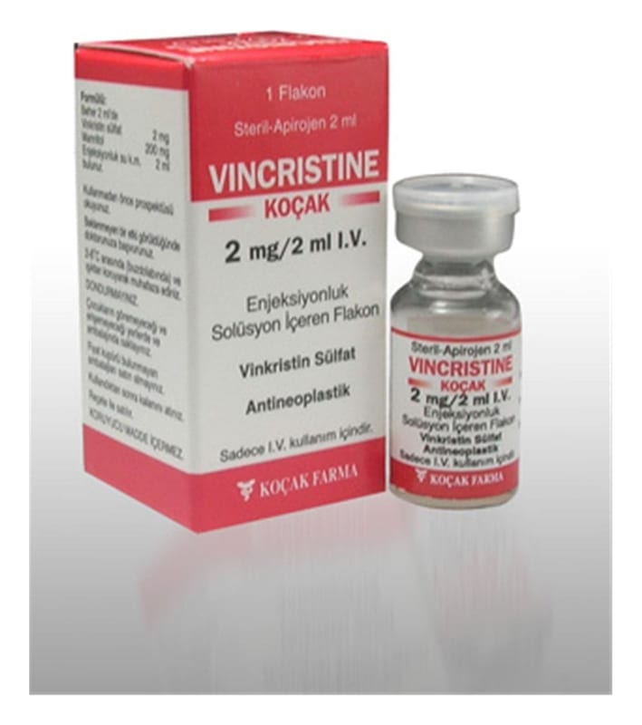

Vincristine Kocak 2 mg/2 ml IV Enjeksiyonluk Solüsyon İçeren Flakon

Ne için kullanılır
KT · Bölüm 12. VİNCRİS TİNE - KOÇAK *1 kullanmadan önce dikkat edilmesi gerekenler j 3. VİNCRİSTİNE - KOÇAK nasıl kullanılır? k 4. Olası yan etkiler nelerdir? :